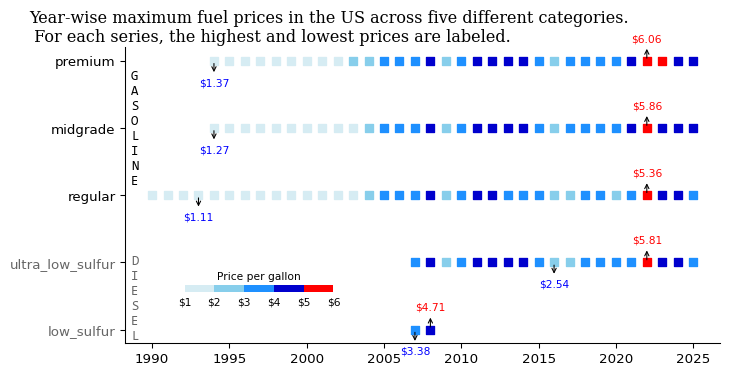

import pandas as pd
import matplotlib.pyplot as plt
import matplotlib.colors as mcolors
from mpl_toolkits.axes_grid1.inset_locator import inset_axesTidyTuesday data for 2025-07-1
weekly_gas_prices = pd.read_csv('https://raw.githubusercontent.com/rfordatascience/tidytuesday/main/data/2025/2025-07-01/weekly_gas_prices.csv')weekly_gas_prices['date'] = pd.to_datetime(weekly_gas_prices['date'])weekly_gas_prices| date | fuel | grade | formulation | price | |
|---|---|---|---|---|---|
| 0 | 1990-08-20 | gasoline | regular | all | 1.191 |
| 1 | 1990-08-20 | gasoline | regular | conventional | 1.191 |
| 2 | 1990-08-27 | gasoline | regular | all | 1.245 |
| 3 | 1990-08-27 | gasoline | regular | conventional | 1.245 |
| 4 | 1990-09-03 | gasoline | regular | all | 1.242 |
| ... | ... | ... | ... | ... | ... |
| 22355 | 2025-06-23 | gasoline | premium | all | 4.128 |
| 22356 | 2025-06-23 | gasoline | premium | conventional | 3.950 |
| 22357 | 2025-06-23 | gasoline | premium | reformulated | 4.333 |
| 22358 | 2025-06-23 | diesel | all | NaN | 3.775 |
| 22359 | 2025-06-23 | diesel | ultra_low_sulfur | NaN | 3.775 |
22360 rows × 5 columns
weekly_gas_prices['year'] = weekly_gas_prices['date'].dt.year# create a new col fuel_grade by combining values from fuel and grade columns
weekly_gas_prices['fuel_grade'] = weekly_gas_prices['fuel'] + '-' + weekly_gas_prices['grade']
weekly_gas_prices| date | fuel | grade | formulation | price | year | fuel_grade | |
|---|---|---|---|---|---|---|---|
| 0 | 1990-08-20 | gasoline | regular | all | 1.191 | 1990 | gasoline-regular |
| 1 | 1990-08-20 | gasoline | regular | conventional | 1.191 | 1990 | gasoline-regular |
| 2 | 1990-08-27 | gasoline | regular | all | 1.245 | 1990 | gasoline-regular |
| 3 | 1990-08-27 | gasoline | regular | conventional | 1.245 | 1990 | gasoline-regular |
| 4 | 1990-09-03 | gasoline | regular | all | 1.242 | 1990 | gasoline-regular |
| ... | ... | ... | ... | ... | ... | ... | ... |
| 22355 | 2025-06-23 | gasoline | premium | all | 4.128 | 2025 | gasoline-premium |
| 22356 | 2025-06-23 | gasoline | premium | conventional | 3.950 | 2025 | gasoline-premium |
| 22357 | 2025-06-23 | gasoline | premium | reformulated | 4.333 | 2025 | gasoline-premium |
| 22358 | 2025-06-23 | diesel | all | NaN | 3.775 | 2025 | diesel-all |
| 22359 | 2025-06-23 | diesel | ultra_low_sulfur | NaN | 3.775 | 2025 | diesel-ultra_low_sulfur |
22360 rows × 7 columns
Plotting
fig, ax = plt.subplots(figsize=(8, 4))
intervals = [1.0, 2.0, 3.0, 4.0, 5.0, 6.0]
colors = ['#D6ECF3', '#87CEEB', '#1E90FF', '#0000CD', 'red']
cmap = mcolors.ListedColormap(colors)
norm = mcolors.BoundaryNorm(intervals, cmap.N)
df_max_price = weekly_gas_prices.groupby(['year', 'fuel_grade'])['price'].max().reset_index()
fuel_cat = ['gasoline-all', 'gasoline-premium', 'gasoline-midgrade', 'gasoline-regular', 'diesel-all', 'diesel-ultra_low_sulfur', 'diesel-low_sulfur']
df_max_price['fuel_grade'] = pd.Categorical(df_max_price['fuel_grade'], categories=fuel_cat, ordered=True)
# sort by year and fuel_grade
df_max_price = df_max_price.sort_values(by=['fuel_grade'])
# remove rows where fuel_grade contains "all"
df_max_price = df_max_price[~df_max_price['fuel_grade'].str.contains('all')]
s1 = ax.scatter(
df_max_price['year'],
df_max_price['fuel_grade'],
c=df_max_price['price'],
cmap=cmap,
norm=norm,
marker='s'
)
ax.invert_yaxis()
cbar_ax = inset_axes(ax,
width="50%", # Width as a percent of the parent axis
height="5%", # Height as a percent of the parent axis
loc='lower center', # Position inside the main plot
bbox_to_anchor=(-0.025, 0.15, 0.5, 0.5),
bbox_transform=ax.transAxes)
cbar = plt.colorbar(s1, cax=cbar_ax, shrink=0.5, orientation='horizontal')
cbar.set_ticklabels([f'${interval:.0f}' for interval in intervals])
cbar.outline.set_visible(False)
cbar.set_label('Price per gallon', fontsize=8)
cbar.ax.xaxis.set_label_position('top')
cbar.ax.tick_params(length=0, labelsize=8)
for label in ax.get_yticklabels():
if "diesel" in label.get_text():
label.set_color('#666666')
ax.set_yticks(ax.get_yticks())
ax.set_yticklabels([k.get_text().split('-')[1] for k in ax.get_yticklabels()])
ax.text(0.01, 0.925, '\n'.join("GASOLINE"), transform=ax.transAxes, fontsize=10,
verticalalignment='top', fontfamily='Consolas')
ax.text(0.01, 0.30, '\n'.join("DIESEL"), transform=ax.transAxes, fontsize=10,
verticalalignment='top', color='#666666', fontfamily='Consolas')
ax.spines[['top', 'right']].set_visible(False)
# Label max and min for each fuel_grade
for grade in df_max_price['fuel_grade'].unique():
subset = df_max_price[df_max_price['fuel_grade'] == grade]
# Skip if empty or NaNs
if subset.empty or subset['price'].isnull().all():
continue
max_row = subset.loc[subset['price'].idxmax()]
min_row = subset.loc[subset['price'].idxmin()]
arrow = dict(arrowstyle='<-', color='black', linewidth=0.8)
# Annotate max
ax.annotate(
f"${max_row['price']:.2f}",
xy=(max_row['year'], max_row['fuel_grade']),
xytext=(0, 13),
textcoords='offset points',
ha='center', va='bottom',
fontsize=8, color='red',
arrowprops=arrow
)
# Annotate min
ax.annotate(
f"${min_row['price']:.2f}",
xy=(min_row['year'], min_row['fuel_grade']),
xytext=(0, -20),
textcoords='offset points',
ha='center', va='bottom',
fontsize=8, color='blue',
arrowprops=arrow
)
fig.suptitle('Year-wise maximum fuel prices in the US across five different categories. \n For each series, the highest and lowest prices are labeled.',x=0, ha='left', fontfamily='Serif')
plt.savefig('gas_prices.png', dpi=300, bbox_inches='tight')
plt.show()